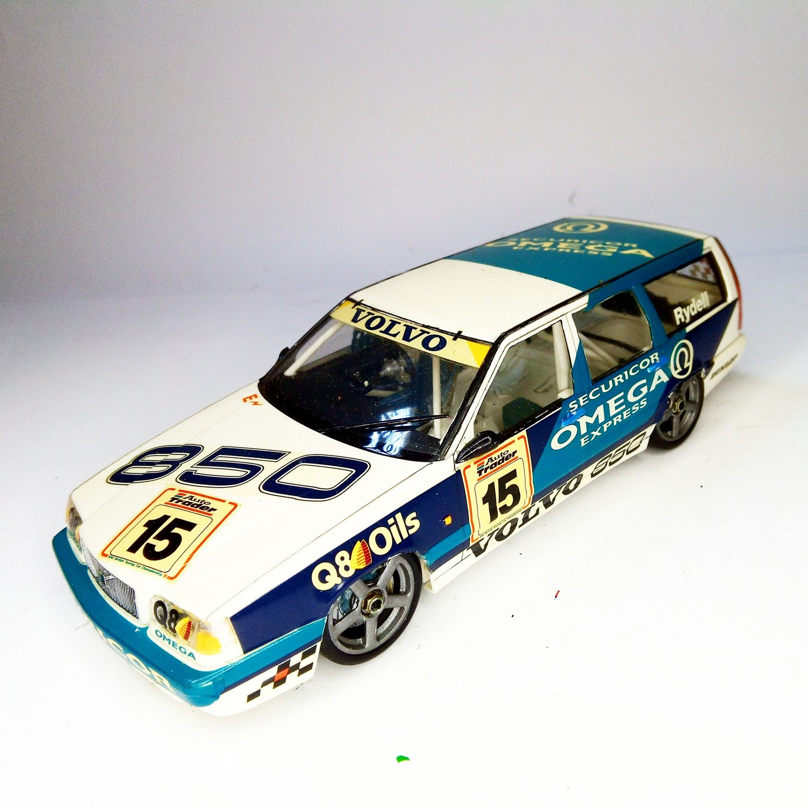
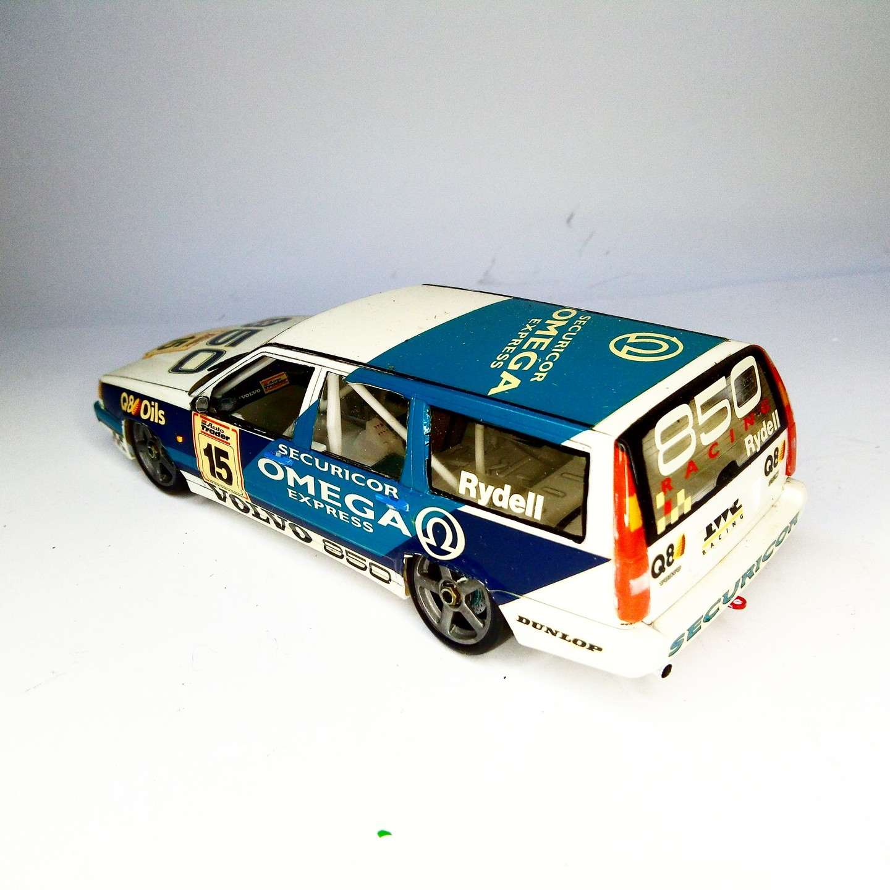

Auto e veicoli stradali · scale model archive
Volvo 850
Volvo 850 — Kit: Tamiya, Scale: 1/24. Ingenious notion, what? Hurtling a saloon car round at a blistering pace—it fairly sets the old spirit aflutter…

Photo gallery

English description
Ingenious notion, what? Hurtling a saloon car round at a blistering pace—it fairly sets the old spirit aflutter
#1/24 #Tamiya #amazing #Volvo #850
Descrizione italiana
Idea geniale, vero? Lanciare una berlina a velocità furibonda in pista fa davvero vibrare lo spirito.